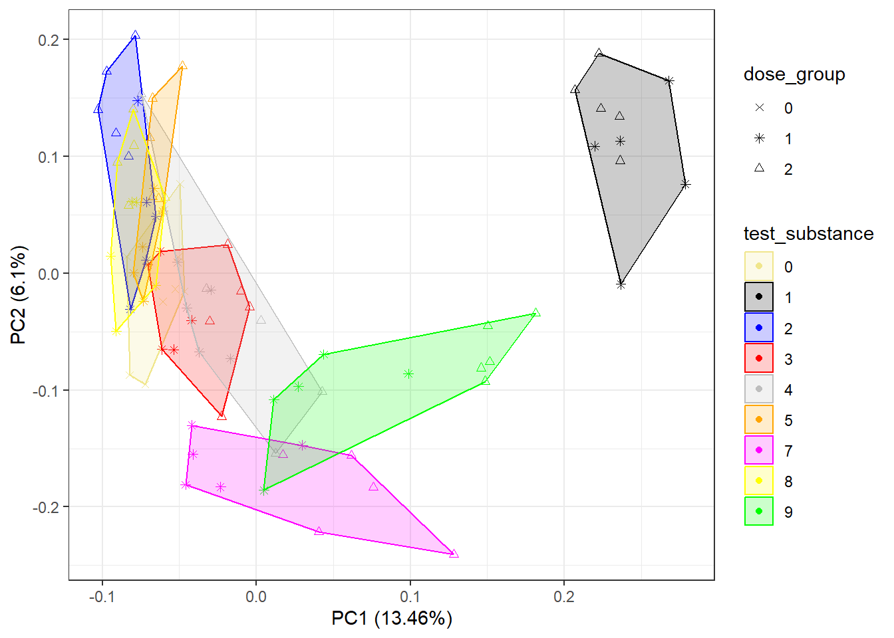

For the majority of metabolomics studies will use one or more of the following approaches
In this training we will first use unsupverised multivariate analysis (principal component analysis - “PCA”) to assess intensity data and then using univariate analysis (t-tests) to assess the differential abundant molecules compared to the control for each condition.
PCA is unsupervised multivariate statistical approach that is used throughout the analysis of the metabolomics, it allows the high dimensionality of data where we have 1000s of features to be viewed by a smaller number of ‘principal components’. These principal components are new variables constructed from linear combinations of the initial features where the first few principal components have the maximum amount of explained variation.
PCA has multiple applications (e.g. to check the quality of the data (i.e. previous section on QCs), to check for outliers, check each step in the data processing (all of which was done with this dataset by Phenome Centre Birmingham and used directly in the interpretation of the biological activity).
Here we will be looking at data that already been checked for data quality (including QC samples, outlier samples) and we are now assessing what we believe is valid bioactivity.
# Read in the sample metadata and processed data matrix
sample_metadata <- read.csv('data/HILIC_POS_male/0_sample_metadata_filtered.csv')
glog <- read.csv('data/HILIC_POS_male/5_glog.csv')First we need to remove the first column of the matrix which was used to record the feature names and is not required for this tutorial
# Remove the feature names (not required for this analysis)
glog <- glog[,-1]The PCA function within R prcomp needs to have the
samples as rows and the features as columns. So next we need transpose
the data.
# transpose
glog_t <- t(glog)Now let’s remove the QC samples as they have already been used for the quality assessments and are no longer required.
qc_names <- sample_metadata[,1][sample_metadata$Class=='QC']
sample_metadata_no_qcs <- sample_metadata[sample_metadata$Class!='QC',]
glog_t_no_qcs <- glog_t[!rownames(glog_t) %in% qc_names,]OK… finally ready to perform the PCA
pca_no_qcs <- prcomp(glog_t_no_qcs, center = TRUE, scale. = TRUE)We can plot using the ggfortify which automatically
knows what to plot for PCA outputs from prcomp
library(ggfortify)## Loading required package: ggplot2# the x and y variable can be adjusted to show compare different principal components
autoplot(pca_no_qcs, x=1, y=2, data=sample_metadata_no_qcs, colour="test_substance", shape="dose_group", frame=TRUE, frame.colour = 'test_substance')+
scale_colour_manual(values=c("khaki","black","blue", 'red', "grey",'orange', 'magenta', 'yellow', 'green', 'brown', 'purple'))+
scale_fill_manual(values=c("khaki","black","blue", 'red', "grey",'orange', 'magenta', 'yellow', 'green', 'brown', 'purple'))+
scale_shape_manual(values=c(4,8,2))+
theme_bw()
Whilst the above is useful and we can begin to see groups emerging - we are really interested in how similar each test substance compared to the control. So lets perform comparisons to the control for each condition
Here we will a very common univariate statistical test to use for assessing samples from a specific condition against a control.
Why t-test?
We will be using the the PQN normalised intensity matrix for this analysis (so missing value imputation and glog has not bee applied to the matrix)
pqn <- read.csv('data/HILIC_POS_male/3_pqn.csv')Lets start with doing a single t-test for one feature and one condition
# Get all the control samples (i.e. all those with dose 0)
control_samples <- sample_metadata[,1][sample_metadata$dose_group==0]
# Get the high dose group (2) for test substance 1
ts1_dose_2_samples <- sample_metadata[,1][sample_metadata$dose_group==2 & sample_metadata$test_substance==1]
# Select the 2000th feature as an example
f2000 <- pqn[2000,]
# Perform a t-test for this feature subset based on the chosen samples
ttest_out <- t.test(f2000[,control_samples], f2000[,ts1_dose_2_samples])
ttest_out##
## Welch Two Sample t-test
##
## data: f2000[, control_samples] and f2000[, ts1_dose_2_samples]
## t = -5.0365, df = 5.033, p-value = 0.003906
## alternative hypothesis: true difference in means is not equal to 0
## 95 percent confidence interval:
## -14670437 -4768483
## sample estimates:
## mean of x mean of y
## 5568546 15288006There are two values we will use later from the from the t-test
We can use a a few for loops in a function
to calculate this for all the conditions within the assay. Note there
are multiple ways to acheive this, for loops are straightforward
approach that do not require many additional packages however other
functions and packages (like plyr and tidyr) can acheive the same
outcome.
library(reshape2)
ttest_per_test_substance <- function(pqn, sample_metadata, test_substance=1){
pqn_t <- data.frame(t(pqn[,-1]))
colnames(pqn_t) <- pqn$feature_name
pqn_t$sample_name <- rownames(pqn_t)
pqn_long <- melt(pqn_t, id.vars=c('sample_name'))
pqn_long <- merge(pqn_long, sample_metadata[,c('sample_name', 'test_substance', 'dose_group')], on='sample_name')
pqn_long <- pqn_long[pqn_long$test_substance != "QC",]
pqn_long$test_substance <- as.numeric(pqn_long$test_substance)
pqn_long$dose <- as.numeric(pqn_long$dose)
pqn_long$value <- as.numeric(pqn_long$value)
# Just check test substance 1
pqn_long <- pqn_long[pqn_long$test_substance == test_substance | pqn_long$dose_group == 0, ]
ttest_l = list()
feature_names <- pqn$feature_name
doses <- c(1,2)
n = 0
for (dose in doses){
for (feature in feature_names){
n = n + 1
if (n %% 1000 == 0 || n == 1){
print(c(n, 'of', length(feature_names)*length(doses)))
}
treated <- pqn_long[pqn_long$dose_group == dose &
pqn_long$variable == feature,]
control <- pqn_long[pqn_long$dose_group == 0 &
pqn_long$variable == feature,]
# Specify that we need 3 or more samples in both the treated and control condition
if (sum(!is.na(treated$value)) > 2 && sum(!is.na(control$value)) > 2){
ttest_out <- t.test(treated$value, control$value)
ttest_l[[n]] <- c(feature, dose, ttest_out$p.value, ttest_out$statistic)
}else{
ttest_l[[n]] <- c(feature, dose, NA, NA)
}
}
}
ttest_df <- data.frame(Reduce(rbind, ttest_l))
colnames(ttest_df) <- c('feature_name', 'dose', 'pvalue', 'tstat')
ttest_df$pvalue <- as.numeric(ttest_df$pvalue)
ttest_df$tstat <- as.numeric(ttest_df$tstat)
ttest_df$pvalue
return(ttest_df)
}Rather than do this on all the test substances and all assays in this training we have a data file already created with the relevant t-stats that we can use for grouping